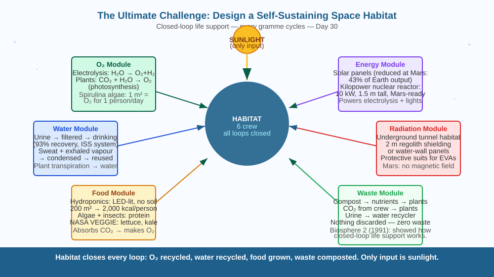

Apply everything you have learned this month — from electricity to digestion, from magnets to photosynthesis — to solve the hardest engineering design challenge in human history: keeping people alive in space, indefinitely, without resupply from Earth.
The International Space Station (ISS) orbits Earth at 400 km altitude. It needs resupply missions every 2–3 months. If those resupply missions stopped, the crew would run out of food within weeks. Yet life on Earth has sustained itself for 3.8 billion years — with no resupply. How does Earth do it? And can we replicate it in a small sealed habitat for a crew of six, somewhere between Earth and Mars?
Earth sustains life through closed-loop cycles where every waste product becomes a resource for something else. A self-sustaining space habitat must replicate these cycles artificially:
Oxygen cycle: - Plants (via photosynthesis) convert CO₂ + H₂O → O₂ + glucose - Humans breathe O₂ and exhale CO₂ — the cycle closes - Backup: Electrolysis of water (electricity → split H₂O into H₂ + O₂) is used on the ISS today
Water cycle: - Humans exhale water vapour, sweat, and produce urine - Advanced filtration systems can purify all water: urine → drinking water (NASA's USOS system on ISS achieves 93% recovery) - Plants transpire water vapour → condenses → collected as liquid (Day 23 biotic pump in miniature)
Food cycle: - Hydroponics (growing plants in water without soil) or aeroponics (roots in misted air) — LED-lit, nutrient-fed - NASA's VEGGIE system on ISS grows lettuce, kale, and radishes - To cover 2,000 calories/day per person, a crew of 6 would need ~200 m² of intensive growing area - Protein: insects (mealworms, crickets) and algae are highly efficient food sources in small space
Energy: - Solar panels (further from Sun = less effective; at Mars, solar panels produce only 43% of what they would at Earth) - Nuclear fission reactors (NASA's Kilopower project: 10 kW reactor, 1.5 m tall, for Mars surface)
Waste cycle: - Human waste + food scraps → composted → nutrients fed back to plants (closing the loop) - Every gramme of material must be reused
Earth is a giant sealed biosphere with one external input: sunlight. Everything else — carbon, nitrogen, oxygen, water — cycles. A space habitat is a miniature Earth: same principle, engineered instead of evolved. The challenge is that Earth's biosphere has 4.5 billion years of redundancy and self-repair. A space habitat has no redundancy budget — one failed system and the crew dies. Every component must have a backup, and every backup must have a backup.

The diagram shows a habitat cross-section with 6 modules: (1) Living quarters; (2) Plant growth (hydroponics, LED lights); (3) Water recycling (filtration loop); (4) Oxygen generation (electrolysis unit + plant CO₂ absorption); (5) Power (solar panels + battery/nuclear); (6) Waste processing (compost → nutrients). Arrows show the closed loops connecting all 6 modules. A summary band shows the input (sunlight + initial resources) and zero outputs (everything is recycled).
Seal a small plant in a clear plastic bag with a few teaspoons of water. Leave it in bright light for 2 hours. Observe: the plant releases O₂ (bag may slightly inflate), water droplets appear on the bag walls (transpiration condensing), and CO₂ from the plant's dark respiration is used again in photosynthesis. This sealed-bag ecosystem is a micro-demonstration of the same principles needed for a space habitat — a tiny closed loop. Try adding a few live ants or small insects to see what happens to O₂ balance.
The biggest unsolved problem in space habitat design is psychological, not engineering: how do 6 people live together in a room the size of a large house for 2–3 years, with no option to leave, with communication delays of up to 44 minutes to Earth, with constant life-and-death responsibility for every system? Studies of Antarctic expeditions, submarine crews, and Biosphere 2 show that interpersonal conflict, depression, and loss of motivation can destroy a mission even when all the engineering works perfectly. How would you select and train 6 people for such a mission — and what would you need to know about their psychology beyond just their technical skills?
What is the central idea behind designing a self-sustaining space habitat?
Why is understanding the mechanism of closed-loop life support more useful than knowing a habitat needs air and food?
If the plant-growing system in a space habitat failed, what would you predict would happen to the crew over time?
This is your final Class 7 design challenge. Propose a self-sustaining habitat for 6 people on a 3-year Mars mission. Your design must address: (a) oxygen source, (b) water source and recycling, (c) food production method (with a rough area calculation), (d) energy source, and (e) radiation protection. For each, name one real technology that exists or is in development. Then identify the single biggest risk in your design — the failure that would be most catastrophic — and explain how you would mitigate it.
The first true closed ecological life support systems may not be built in space — they may be built underground on Earth, in response to climate change. Several projects are already researching sealed "arcologies" (self-sufficient cities) as a response to potential global catastrophes. The engineering challenges are identical to a space habitat: closed water loops, photosynthesis-based oxygen, recycled nutrients, long-term psychological sustainability for isolated communities. Space habitat research may ultimately be more important for Earth's future than for Mars colonisation.
A self-sustaining habitat closes every loop: O₂ from plants + electrolysis, water recycled from urine + transpiration, food from hydroponics, waste composted to nutrients, energy from solar or nuclear. Every gramme cycles — nothing is wasted.